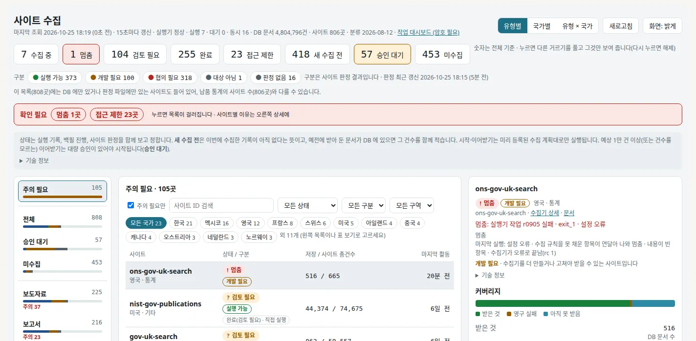
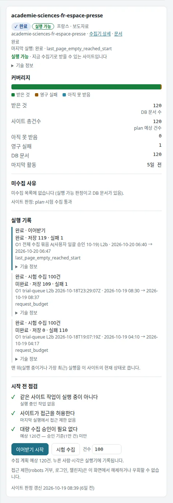
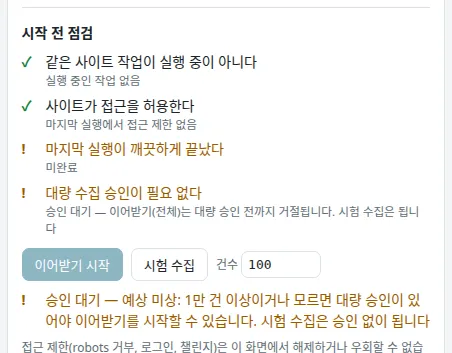
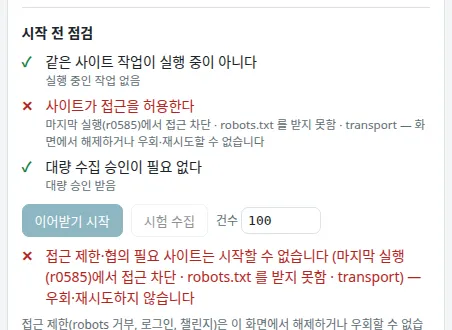
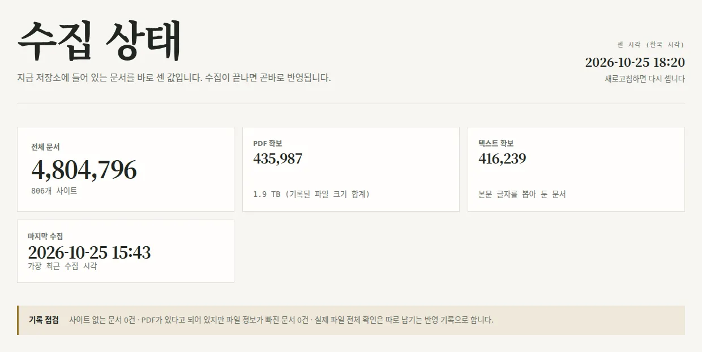
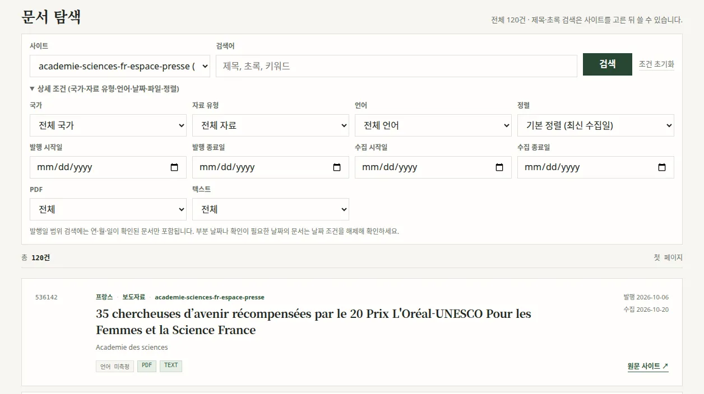
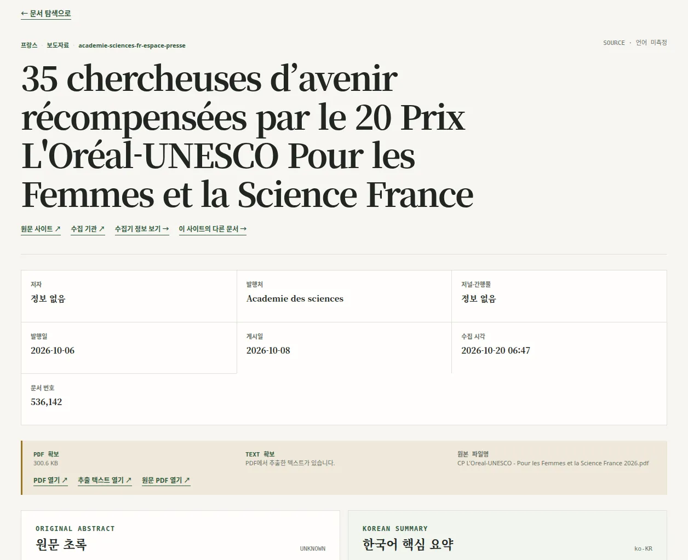
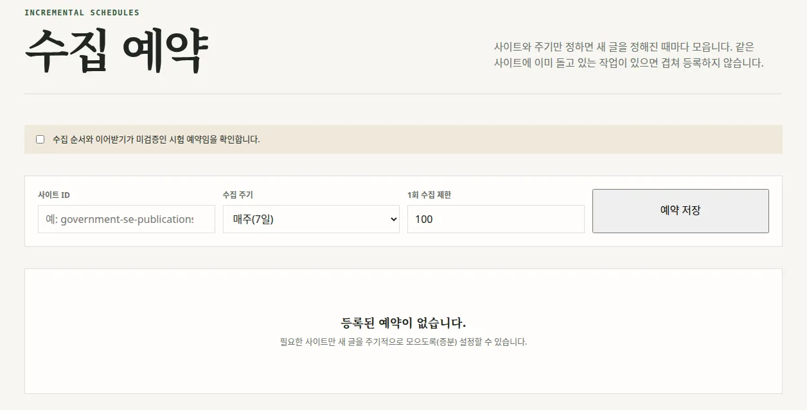
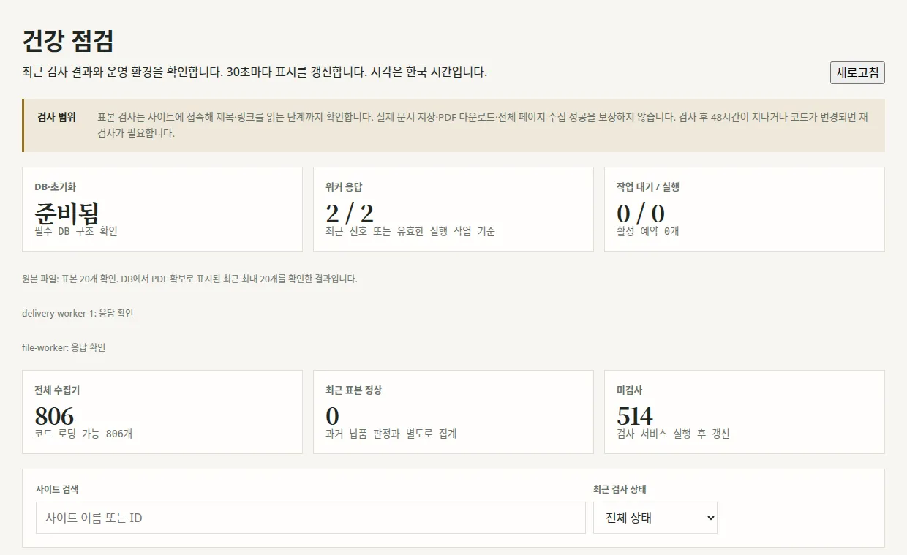
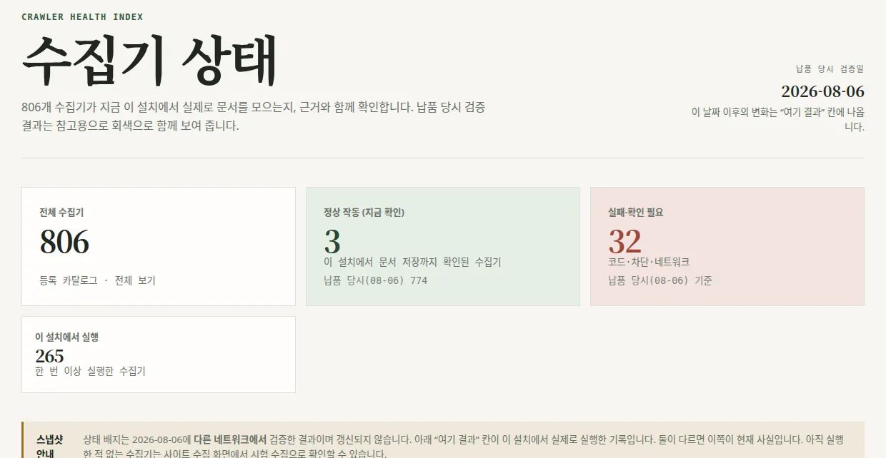

Libertree 사용 안내
처음 볼 곳
수집은 「사이트 수집」 화면 하나에서 시작하고 확인합니다. 시험 수집 → 결과 확인 → 전체 수집(이어받기) 순서로 진행하며, 시작하면 안 되는 사이트는 버튼이 꺼지고 이유가 함께 나옵니다.
- 모든 실행 버튼은 확인 창이 먼저 뜨고, 「확인」을 눌러야 요청이 나갑니다.
- 화면은 15초마다 저절로 새로 고쳐집니다. 바로 보고 싶으면 새로고침을 누릅니다.
- 시각은 모두 한국 시간입니다.
- 아래 그림의 같은 번호는 그림 바로 아래 설명의 번호와 같습니다. 그림 속 숫자(건수·시각)는 찍은 때의 값이라 지금과 다를 수 있습니다.
사이트 수집 쓰는 법
1. 첫 화면: 위쪽 상태와 목록 거르기

폰에서는 그림을 옆으로 밀어 볼 수 있습니다.
- 1실행기 상태 줄: 「실행기 정상 · 실행 N · 대기 N · 동시 16」처럼 지금 도는 수집 수가 나옵니다. 「실행기 연결 안 됨」이나 「일시 중지」가 보이면 시작 버튼이 모두 꺼집니다. 같은 줄 끝의 「작업 대시보드 (암호 필요)」는 누르지 않아도 됩니다.
- 2상태 칩: 수집 중 멈춤 검토 필요 완료 접근 제한 새 수집 전 승인 대기 미수집. 숫자는 그 상태의 사이트 수입니다. 누르면 다른 거르기를 풀고 그 상태만 남기며, 한 번 더 누르면 풀립니다.
- 3확인 필요 띠: 멈춤 N곳·접근 제한 N곳처럼 손볼 사이트 수가 붉게 나옵니다. 누르면 상태 칩과 같이 목록이 걸러집니다.
- 4왼쪽 묶음: 처음에는 맨 위 「주의 필요」가 골라져 있습니다. 모든 사이트를 보려면 「전체」를 누릅니다. 그 아래 승인 대기·미수집·유형별(보도자료·보고서…) 묶음도 있습니다.
- 5「주의 필요만」 체크: 처음에는 켜져 있어 일부 사이트만 보입니다. 찾는 사이트가 없으면 이 체크를 풀거나 ④의 「전체」를 누르세요.
- 6검색칸: 사이트 ID 일부를 넣으면 바로 걸러집니다.
- 7상태·구분·구역 거르기와 그 아래 국가 칩. 검색칸과 함께 쓸 수 있습니다.
- 8사이트 줄: 누르면 오른쪽에 상세가 열립니다(폰은 목록 아래). 「저장 / 사이트 총건수」는 받은 수와 사이트 전체 건수입니다.
- 9보기 전환: 유형별 국가별 유형 × 국가. 표의 칸을 누르면 그 사이트들만 남습니다.
- 10새로고침: 15초를 기다리지 않고 바로 다시 읽습니다.
- 11화면: 밝게: 밝은·어두운 화면을 바꿉니다.
2. 사이트 줄을 누르면: 상세 (완료된 사이트 예)
예: academie-sciences-fr-espace-presse (프랑스 · 보도자료, 120건 모두 받음). 데스크톱은 오른쪽, 폰은 목록 아래에 열립니다.

- 1사이트 이름과 상태: 「✓ 완료」「실행 가능」 같은 배지, 국가·유형, 마지막 실행 결과 한 줄.
- 2수집기 상세 · 문서 링크: 「문서」를 누르면 문서 탐색이 이 사이트로 걸러져 열립니다.
- 3커버리지: 막대(초록 받은 것 · 갈색 영구 실패 · 파랑 아직 못 받음)와 받은 것 / 사이트 총건수 / 아직 못 받음 / 영구 실패 / DB 문서 / 마지막 활동. 사이트 총건수 아래 「plan 예상 건수」는 사이트가 숫자를 보여 주지 않아 계획의 예상값을 쓴다는 뜻입니다.
- 4미수집 사유: 못 받은 부분이 있으면 그 이유. 없으면 「미수집 목록에 없습니다」.
- 5실행 기록: 시험 수집·이어받기 기록이 최근 것부터 나옵니다. 「완료 · 저장 119 · 실패 1」처럼 저장 수가 보이고, 맨 위 기록이 이 사이트의 현재 상태입니다. 실행 중이면 여기에 취소 버튼이 나옵니다.
- 6시작 전 점검: 같은 작업이 돌고 있지 않은지, 사이트가 접근을 허용하는지, 대량 승인이 필요한지를 ✓(통과) · !(주의) · ✕(막힘)으로 보여 줍니다.
- 7이어받기 시작: 받은 데서부터 끝까지 받습니다(처음이면 「수집 시작」). 누르면 확인 창이 먼저 뜹니다.
- 8시험 수집: 옆 칸의 건수만큼만 받아 봅니다. 역시 확인 창이 먼저 뜹니다.
- 9건수 칸: 시험 수집 건수 1~1,000, 기본 100.
3. 막힌 예: 시작 전 점검에 ! 나 ✕ 가 있을 때
승인 대기 — 이어받기만 막힘 (예: nin-nl-publications)

- 1「대량 수집 승인이 필요 없다」 줄이 !로 바뀌고 「승인 대기 — 이어받기(전체)는 대량 승인 전까지 거절됩니다. 시험 수집은 됩니다」가 붙습니다.
- 2이어받기 시작은 흐리게 꺼져 있습니다.
- 3시험 수집은 켜져 있어 승인 없이 할 수 있습니다.
- 4버튼 아래에 꺼진 이유가 다시 나옵니다. 예상 1만 건 이상이거나 건수를 모르면 책임자 승인이 있어야 합니다.
접근 제한 — 둘 다 막힘 (예: fss-or-kr-fss)

- 1「사이트가 접근을 허용한다」 줄이 붉은 ✕. 마지막 실행에서 사이트가 막았다는 뜻입니다(예: robots.txt 를 받지 못함).
- 2이어받기 시작·시험 수집 모두 꺼집니다.
- 3「접근 제한·협의 필요 사이트는 시작할 수 없습니다 … 우회·재시도하지 않습니다」. 화면에서 풀 수 없고, 사이트 쪽 허가가 있어야 합니다.
수집 계획(plan)이 없는 사이트는 같은 자리에 「실행기에 등록된 plan 이 없습니다」가 나옵니다. 문구별 뜻과 할 일은 버튼이 막힐 때 표를 보세요.
4. 확인 창
시험 수집·이어받기 시작(또는 수집 시작)·취소를 누르면 바로 요청이 나가지 않고, 브라우저의 작은 확인 창이 먼저 뜹니다. 첫 줄은 사이트 ID, 둘째 줄이 할 일입니다.
| 누른 버튼 | 확인 창 문구 |
|---|---|
| 시험 수집 | 「사이트 ID / 시험 수집 100건을 실행기에 요청할까요?」 (건수는 건수 칸의 값) |
| 이어받기 시작 · 수집 시작 | 「사이트 ID / 수집(이어받기·전체)을 실행기에 요청할까요? / 대량 수집이면 승인 전까지 시작되지 않습니다.」 |
| 취소 (실행 기록) | 「사이트 ID / 작업 작업번호을(를) 취소할까요?」 |
- 사이트 ID와 건수가 맞는지 보고 확인을 눌러야 요청이 나갑니다. 취소를 누르면 아무 일도 일어나지 않습니다.
- 받아들여지면 「요청됨 · 작업 N」이 뜨고, 잠시 뒤 실행 기록 맨 위에 대기·실행 중 줄이 생깁니다. 취소는 「다음 확인 지점에서 멈춥니다」라고 나옵니다.
- 거절되면 「거절됨: 이유」나 「요청을 보내지 못했습니다」가 나옵니다. 이유는 버튼이 막힐 때 표와 같습니다.
이 설명서를 만들 때는 실제 요청이 나가지 않도록 확인 창을 띄우지 않아 그림이 없습니다.
자주 하는 일
A. 시험 수집 → 확인 → 전체 수집
- 사이트 수집 검색칸에 사이트 ID를 넣고 줄을 누릅니다.
- 「시작 전 점검」에 막힘(✕)이 없는지 봅니다.
- 건수를 적고(예: 100) 시험 수집 → 확인 창 확인.
- 잠시 뒤 실행 기록에 「완료 · 저장 N」이 뜨면, 문서 링크로 실제 문서를 열어 제목·날짜·초록을 확인합니다.
- 문제없으면 이어받기 시작 → 확인. 「승인 대기」가 나오면 대량 승인을 먼저 받습니다.
B. 지금 무엇이 돌고 있나
- 사이트 수집 위쪽 수집 중 칩을 누릅니다.
- 사이트를 누르면 커버리지에서 얼마나 받았는지 봅니다.
- DB 전체 문서 수는 「수집 상태」 화면의 「전체 문서」·「마지막 수집」에서 봅니다.
C. 멈춘 수집 다시 / 취소
- 멈춤 칩 → 사이트 선택 → 시작 전 점검의 이유를 읽습니다.
- 일시 오류였으면 이어받기 시작. 받은 데서부터 이어 받습니다.
- 그만두려면 실행 기록의 취소. 다음 확인 지점에서 멈춥니다.
D. 받은 문서 찾기
- 「문서 탐색」에서 사이트를 먼저 고릅니다(고르기 전에는 검색칸이 꺼져 있습니다).
- 검색어 입력 → 검색. 「상세 조건」에서 국가·날짜·PDF 여부를 지정합니다.
- 제목을 누르면 상세(초록·요약·키워드), 원문 사이트 ↗로 원문에 갑니다.
- PDF가 있는 문서만 보려면 「수집 상태」의 「PDF 확보」 카드를 누릅니다.
E. 새 글 주기 수집 예약
- 「수집 예약」 맨 위 확인 체크를 켭니다.
- 사이트 ID(자동완성)·주기·방식을 고르고 예약 저장.
- 끄려면 「사용」 체크를 끄고 변경 저장, 지우려면 삭제 → 삭제 확인.
수집 계획이 준비된 사이트만 저장됩니다.
버튼이 막힐 때
상세의 「시작 전 점검」에 아래 문구 중 하나가 나옵니다. 실제 모습은 막힌 예 그림을 보세요.
| 화면 문구 | 뜻 | 할 일 |
|---|---|---|
| 실행기 없음 / 연결 안 됨 | 수집 실행 프로그램과 연결이 끊김 | 잠시 뒤 새로고침. 계속되면 개발 담당에게 |
| 실행기가 일시 중지돼 있어… | 점검 등으로 새 작업을 받지 않는 중 | 중지가 풀린 뒤 다시 |
| 실행기에 등록된 plan 이 없습니다 | 이 사이트용 수집 계획(설정)이 아직 없음 | 개발 담당에게 수집기·계획 요청 |
| plan 등록됨, 실행 불가 — … | 계획은 있으나 문제가 있어 막아 둠 | 뒤에 붙은 이유를 개발 담당에게 전달 |
| …실행 중입니다 / 이미 수집 중입니다 | 같은 사이트 작업이 이미 돌고 있음 | 끝날 때까지 기다리거나 취소 후 다시 |
| 접근 제한·협의 필요 사이트는 시작할 수 없습니다 | 사이트가 차단·robots 거부·로그인 요구 | 시작 불가. 사이트 쪽 허가가 있어야 함(우회하지 않음) |
| 승인 대기 — 예상 N건… | 1만 건 이상이거나 건수를 모르는 대량 수집 | 시험 수집은 됩니다. 전체 수집은 책임자 승인 뒤 개발 담당이 열어 줍니다 |
숫자 읽는 법
화면마다 세는 기준이 달라 숫자가 다르게 보일 수 있습니다. 아래를 기준으로 보세요.
| 알고 싶은 것 | 볼 곳 | 참고 |
|---|---|---|
| DB 전체 문서·PDF 수 | 수집 상태 — 전체 문서, PDF 확보 | DB 실측값. PDF 수는 30분마다 갱신 |
| 지금 도는 수집 | 사이트 수집 — 맨 위 실행기 줄, 「수집 중」 칩 | 건강 점검의 「작업 대기/실행」은 다른 작업 대기열이라 0일 수 있습니다 |
| 사이트 하나의 진행 | 사이트 수집 — 상세 커버리지 | 사이트 총건수는 사이트가 보여 주는 값이나 계획의 예상값 |
| 수집기 검증 결과 | 수집기 상태 | 회색 「납품 당시」 숫자는 08-06 검증 기준(지금 상태 아님) |
국가·유형이 「기타(미정)」인 문서가 많습니다. 이전 납품 자료에 국가·유형 정보가 없던 것이라 분포 막대는 참고만 하세요.
다른 화면
수집 상태

폰에서는 그림을 옆으로 밀어 볼 수 있습니다.
- 1전체 문서: 지금 DB에 들어 있는 문서 수와 사이트 수. 납품·보고 때 기준이 되는 숫자입니다.
- 2PDF 확보: PDF 파일까지 받은 문서 수와 파일 크기 합계(30분마다 갱신). 카드를 누르면 PDF가 있는 문서만 문서 탐색에 나옵니다.
- 3텍스트 확보: 본문 글자를 뽑아 둔 문서 수.
- 4마지막 수집: 가장 최근에 문서가 들어온 시각.
- 5센 시각: 위 숫자를 센 때. 화면을 새로 고치면 다시 셉니다.
- 6기록 점검: 사이트 없는 문서, 파일 정보가 빠진 문서 수. 0건이면 정상입니다.
아래로 내리면 국가별·자료 유형별 문서 수와 「사이트별 마지막 수집」(7일 이내 / 8~30일 / 31~90일 / 90일 초과·미수집) 카드가 있습니다.
문서 탐색
사이트를 고른 뒤 「상세 조건」을 펼친 모습입니다.

폰에서는 그림을 옆으로 밀어 볼 수 있습니다.
- 1사이트: 먼저 사이트를 고릅니다. 고르기 전에는 검색칸이 꺼져 있고, 사이트 이름 옆 괄호가 문서 수입니다.
- 2검색어: 제목·초록·키워드에서 찾습니다.
- 3검색: 조건대로 목록을 다시 불러옵니다(보기만 하는 조회). 옆의 「조건 초기화」는 모두 지웁니다.
- 4상세 조건: 국가·자료 유형·언어·정렬·발행일·수집일·PDF·텍스트 조건을 펼칩니다.
- 5PDF: 「확보」로 PDF가 있는 문서만 남깁니다.
- 6총 N건: 지금 조건에 맞는 문서 수.
- 7제목: 누르면 문서 상세가 열립니다. 아래 PDF·TEXT 표시는 파일·본문이 있다는 뜻입니다.
- 8원문 사이트 ↗: 원래 사이트의 글을 새 창으로 엽니다.
문서 상세 한 건 (제목을 눌렀을 때)

폰에서는 그림을 옆으로 밀어 볼 수 있습니다.
- 1← 문서 탐색으로: 목록으로 돌아갑니다.
- 2원문 사이트 ↗: 원래 사이트의 이 글. 옆의 「수집 기관 ↗」은 기관 페이지입니다.
- 3수집기 정보 보기 →: 이 사이트 수집기의 상세.
- 4이 사이트의 다른 문서 →: 같은 사이트로 걸러진 문서 탐색.
- 5문서 정보: 저자·발행처·저널, 발행일·게시일·수집 시각, 문서 번호.
- 6PDF 상자: PDF·텍스트를 확보했는지, 파일 크기와 원본 파일명. 「PDF 열기 ↗」「추출 텍스트 열기 ↗」로 받은 파일을 봅니다.
- 7원문 초록: 사이트에서 받은 초록(원래 언어).
- 8한국어 핵심 요약: 번역 작업으로 만든 요약. 아직 없으면 「아직 생성된 한국어 요약이 없습니다」. 아래로 내리면 키워드·저장된 요약이 있습니다.
수집 예약

폰에서는 그림을 옆으로 밀어 볼 수 있습니다.
- 1확인 체크: 「수집 순서와 이어받기가 미검증인 시험 예약임을 확인합니다」. 켜야 아래 저장이 됩니다.
- 2사이트 ID: 일부를 치면 자동완성됩니다. 수집 계획이 준비된 사이트만 저장됩니다.
- 3수집 주기: 예: 매주(7일).
- 41회 수집 제한: 한 번 돌 때 받을 최대 건수.
- 5예약 저장: 누르면 바로 예약이 만들어집니다.
- 6예약 목록: 지금은 「등록된 예약이 없습니다」. 예약이 생기면 줄마다 「사용」 체크가 있고, 체크를 바꾼 뒤 변경 저장을 눌러야 반영됩니다. 지우려면 삭제 → 삭제 확인.
건강 점검

폰에서는 그림을 옆으로 밀어 볼 수 있습니다.
- 1새로고침: 30초를 기다리지 않고 다시 읽습니다.
- 2DB·초기화: 「준비됨」이면 DB가 정상입니다.
- 3워커 응답: 작업자 응답 수 / 전체 수. 둘이 같으면 정상.
- 4작업 대기 / 실행: 다른 작업 대기열이라 사이트 수집이 돌고 있어도 0일 수 있습니다. 사이트 수집 진행은 사이트 수집 화면 맨 위 실행기 줄에서 봅니다.
- 5전체 수집기: 코드가 올라와 있는 수집기 수.
- 6최근 표본 정상: 표본 검사(제목·링크를 읽는 단계까지)를 통과한 수. 실제 저장 성공을 보장하지는 않습니다.
- 7미검사: 아직 표본 검사를 하지 않은 수. 고장이라는 뜻은 아닙니다.
아래 「사이트 검색」으로 수집기를 찾고, 사이트 이름을 누르면 상세가 열립니다.
수집기 상태

폰에서는 그림을 옆으로 밀어 볼 수 있습니다.
- 1납품 당시 검증일(2026-08-06): 회색 「납품 당시」 숫자의 기준일입니다. 지금 상태가 아닙니다.
- 2전체 수집기: 등록된 수집기 수.
- 3정상 작동 (지금 확인): 이 설치에서 문서 저장까지 확인된 수집기.
- 4실패·확인 필요: 코드·차단·네트워크 문제로 확인이 필요한 수집기.
- 5스냅샷 안내: 상태 배지는 납품 당시 결과이고, 「여기 결과」 칸이 이 설치에서 실제로 돌린 기록입니다. 둘이 다르면 「여기 결과」가 맞습니다.
이 화면은 보기 전용입니다. 아래 「분류별 수집기 목록」은 사이트 검색이나 조건(상태·실패 유형·국가·자료 유형)을 골라야 목록이 나옵니다. 수집기 상태와 수집기 상세에 있던 실행·일괄 실행 영역은 화면에서 빠지고, 그 자리에 「수집은 사이트 수집에서 시작합니다 →」 링크가 나옵니다. 링크를 누르면 사이트 수집으로 가며, 수집은 거기서 시작합니다.
한눈에 보기
| 화면 | 쓸 수 있는 것 | 알아 둘 점 |
|---|---|---|
| 수집 예약 | 예약 추가·켜고 끄기·삭제 | 체크를 바꾼 뒤 「변경 저장」을 눌러야 반영 |
| 백필 진행 | 보기만 | 사이트별 과거분 진행률 |
| 수집기 상태 | 국가·유형·상태로 수집기 찾기, 「상세 →」 | 조건을 고르기 전에는 목록이 비어 있습니다. 보기 전용이며 수집은 「수집은 사이트 수집에서 시작합니다 →」 링크로 사이트 수집에서 시작합니다 |
| 건강 점검 | DB·작업자 상태, 수집기 표본 검사 결과, 사이트 이름 클릭 → 상세 | 30초마다 갱신 |
| 수집 상태 | 전체 숫자, 카드 클릭 → 해당 문서 목록 | |
| 문서 탐색 | 사이트별 검색, 상세, 원문 링크 | 사이트 전체를 한 번에 검색하지는 못합니다 |
| 번역 작업 | 「대상 미리보기」로 대상 확인 → 「작업 등록」 | 외부 번역 비용이 듭니다. 「작업 등록」은 누르면 바로 등록되니 미리보기로 대상 수를 먼저 확인하세요 |
API 키 설정
메뉴 설정 → API 키에서 공급자(지금은 OpenAlex) API 키를 넣거나 바꿉니다. 공공데이터포털(data.go.kr)·ScienceON 줄은 자리만 있고, 시험 방법이 준비될 때까지 저장할 수 없습니다.
- 공급자 줄의 「새 키」 칸에 키를 붙여 넣습니다. 칸은 비밀번호처럼 가려집니다.
- 시험 후 저장을 누릅니다. 서버가 그 키로 공급자에 가벼운 시험 요청을 한 번 보냅니다(OpenAlex: 문헌 목록 1건. 그 전에 공급자의 robots.txt 를 한 번 읽습니다).
- 정상이면 그때 저장되고 상태가 「설정됨 · 사용 가능」으로 바뀝니다. 수집기는 다음 실행부터 새 키를 씁니다.
- 실패하면 저장하지 않고 이전 키를 그대로 둡니다. 문구를 보고 다시 넣습니다.
| 문구 | 뜻과 할 일 |
|---|---|
| 키가 맞지 않습니다, 다시 입력해 주세요 | 공급자가 키를 거절했습니다. 복사할 때 빠진 글자가 없는지 보고 다시 넣습니다. |
| 키 형식이 맞지 않습니다 | 공백이나 허용되지 않는 글자가 들어 있습니다. 공급자에 요청하지 않았습니다. |
| 한도 초과, 잠시 뒤 다시 | 공급자의 요청 한도에 걸렸습니다. 공급자가 정한 시간(정하지 않았으면 1분)이 지나기 전에는 다시 눌러도 공급자에 요청하지 않습니다. |
| 시도가 너무 많습니다 | 한 공급자에 10분 동안 5번까지만 시험합니다(시험마다 robots.txt 읽기가 붙어 공급자에 가는 요청은 10분에 최대 10번). 10분 뒤 다시 합니다. |
| 다른 키를 시험하는 중입니다 | 다른 시험이 아직 끝나지 않았습니다. 잠시 뒤 다시 누릅니다. |
| 연결 실패, 다시 시도 | 공급자에 닿지 못했거나 예상과 다른 답이 왔습니다. 잠시 뒤 다시 합니다. |
저장한 키는 화면·응답·기록 어디에도 다시 나오지 않습니다(앞뒤 몇 글자도 보이지 않음). 화면에는 설정 여부와 마지막 시험 결과·시각만 나옵니다. 키를 확인해야 하면 공급자 사이트에서 봅니다.
수집 규칙
- 모든 요청은 사이트의 robots.txt 를 먼저 확인하고, 정직한 수집기 이름(LibertreeCollector)으로 보냅니다.
- 같은 사이트에는 1.5초 이상 간격을 두고, 동시에 여러 요청을 보내지 않습니다.
- 사이트가 막으면(403·429·봇 확인·로그인) 즉시 멈추고 기록만 합니다. 우회하지 않습니다.
- 1만 건 이상 대량 수집은 승인 뒤에만 시작합니다.
용어
| 시험 수집 | 적은 건수(최대 1,000)만 받아 수집기가 제대로 도는지 보는 것 |
| 이어받기 | 전에 받은 데서부터 끝까지 받기. 처음이면 「수집 시작」으로 보임 |
| plan(수집 계획) | 사이트를 어떻게 훑을지 적은 설정. 없으면 시작할 수 없음 |
| 실행기 | 사이트 수집 요청을 받아 실제로 수집을 돌리는 프로그램 |
| 검토 필요 | 받은 수가 사이트 총건수와 다르거나 확인할 점이 있는 사이트 |
| 접근 제한 | 사이트가 수집을 막아 사이트 쪽 허가가 있어야 하는 곳 |
| 반영 | 수집이 끝난 사이트 문서를 운영 DB에 넣는 일(매시간 자동) |